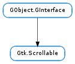

| Subclasses: | EvinceView.View, Gtk.IconView, Gtk.Layout, Gtk.TextView, Gtk.ToolPalette, Gtk.TreeView, Gtk.Viewport, Gucharmap.Chartable |
|---|
| get_hadjustment() | |
| get_hscroll_policy() | |
| get_vadjustment() | |
| get_vscroll_policy() | |
| set_hadjustment(hadjustment) | |
| set_hscroll_policy(policy) | |
| set_vadjustment(vadjustment) | |
| set_vscroll_policy(policy) |
| Name | Type | Flags | Description |
|---|---|---|---|
| hadjustment | Gtk.Adjustment | r/w | Horizontal adjustment that is shared between the scrollable widget and its controller |
| hscroll-policy | Gtk.ScrollablePolicy | r/w | How the size of the content should be determined |
| vadjustment | Gtk.Adjustment | r/w | Vertical adjustment that is shared between the scrollable widget and its controller |
| vscroll-policy | Gtk.ScrollablePolicy | r/w | How the size of the content should be determined |
None
Bases: GObject.GInterface
Gtk.Scrollable is an interface that is implemented by widgets with native scrolling ability.
To implement this interface you should override the Gtk.Scrollable :hadjustment and Gtk.Scrollable :vadjustment properties.
Creating a scrollable widget
All scrollable widgets should do the following.
When a parent widget sets the scrollable child widget’s adjustments, the widget should populate the adjustments’ Gtk.Adjustment :lower, Gtk.Adjustment :upper, Gtk.Adjustment :step-increment, Gtk.Adjustment :page-increment and Gtk.Adjustment :page-size properties and connect to the Gtk.Adjustment ::value-changed signal.
Because its preferred size is the size for a fully expanded widget, the scrollable widget must be able to cope with underallocations. This means that it must accept any value passed to its Gtk.WidgetClass.size_allocate() function.
When the parent allocates space to the scrollable child widget, the widget should update the adjustments’ properties with new values.
When any of the adjustments emits the Gtk.Adjustment ::value-changed signal, the scrollable widget should scroll its contents.
| Returns: | horizontal Gtk.Adjustment. |
|---|---|
| Return type: | Gtk.Adjustment |
Retrieves the Gtk.Adjustment used for horizontal scrolling.
| Returns: | The horizontal Gtk.ScrollablePolicy. |
|---|---|
| Return type: | Gtk.ScrollablePolicy |
Gets the horizontal Gtk.ScrollablePolicy.
| Returns: | vertical Gtk.Adjustment. |
|---|---|
| Return type: | Gtk.Adjustment |
Retrieves the Gtk.Adjustment used for vertical scrolling.
| Returns: | The vertical Gtk.ScrollablePolicy. |
|---|---|
| Return type: | Gtk.ScrollablePolicy |
Gets the vertical Gtk.ScrollablePolicy.
| Parameters: | hadjustment (Gtk.Adjustment or None) – a Gtk.Adjustment |
|---|
Sets the horizontal adjustment of the Gtk.Scrollable.
| Parameters: | policy (Gtk.ScrollablePolicy) – the horizontal Gtk.ScrollablePolicy |
|---|
Sets the Gtk.ScrollablePolicy to determine whether horizontal scrolling should start below the minimum width or below the natural width.
| Parameters: | vadjustment (Gtk.Adjustment or None) – a Gtk.Adjustment |
|---|
Sets the vertical adjustment of the Gtk.Scrollable.
| Parameters: | policy (Gtk.ScrollablePolicy) – the vertical Gtk.ScrollablePolicy |
|---|
Sets the Gtk.ScrollablePolicy to determine whether vertical scrolling should start below the minimum height or below the natural height.